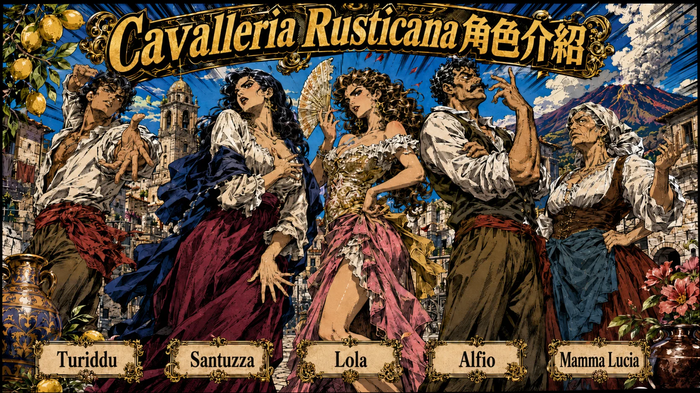
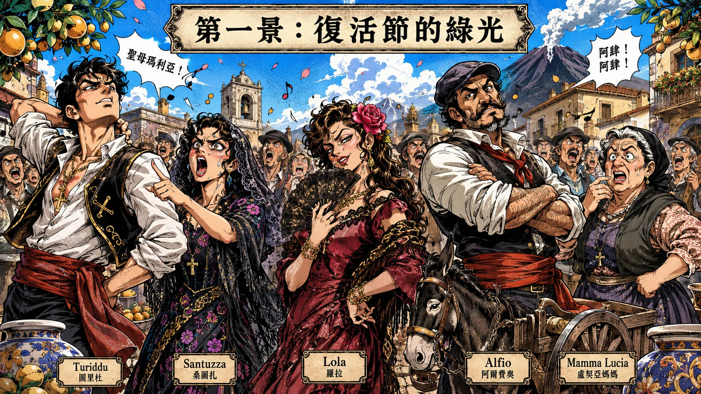
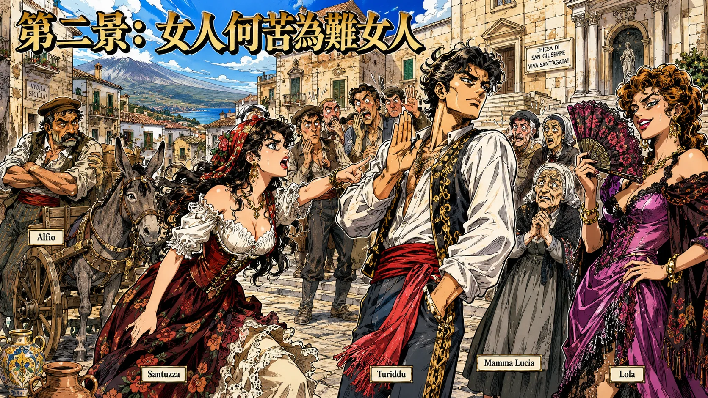
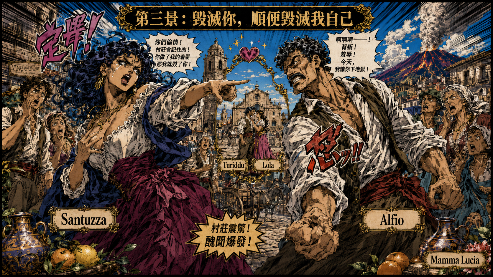
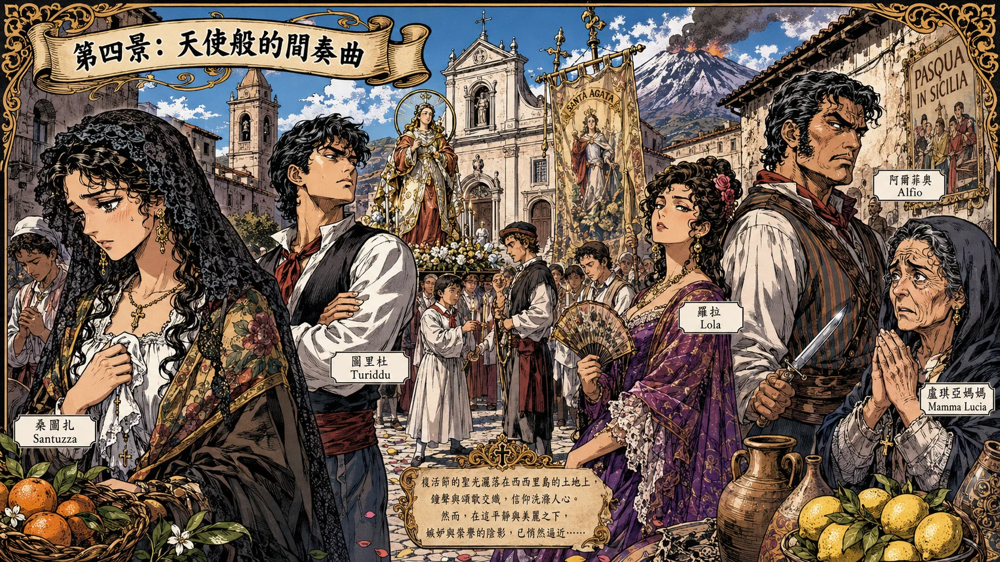
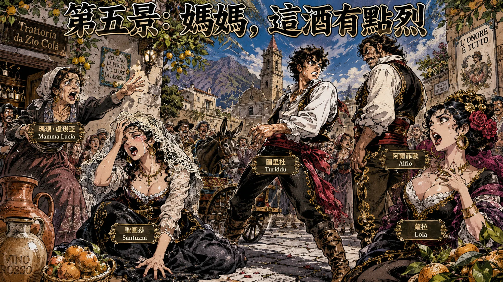

圖里杜 Turiddu
男主角，標準義大利媽寶。當兵回來發現前女友嫁人，為了報復找了現任，結果又回頭勾搭前女友。簡單說，就是渣。
《鄉間騎士》：沒有半個真正的騎士，只有媽寶渣男、憤怒前任、人妻小三與綠帽馬車夫。
各位朋友，板凳坐好，瓜子準備好。
今天我們要講的這部戲，是馬斯卡尼的 《鄉間騎士》。這部歌劇很特別，它只有一幕，全長大概一小時多一點。為什麼這麼短？因為西西里人的復仇是不跟你囉嗦的，講求的就是一個「快、狠、準」。
它開創了所謂的 寫實主義 Verismo。意思就是：沒有神仙，沒有國王，沒有魔法石像，只有一群在鄉下互相傷害的男女。簡單說，這是 19 世紀義大利版的《角頭》加《世間情》。

男主角，標準義大利媽寶。當兵回來發現前女友嫁人，為了報復找了現任，結果又回頭勾搭前女友。簡單說，就是渣。
圖里杜的現任女友，也就是最倒楣的備胎。她愛得死去活來，被拋棄後進化成地獄來的復仇女神。
圖里杜的前女友，現在的人妻。技能是穿得漂漂亮亮在路邊哼歌，專門用來把桑杜莎氣到血壓飆升。
羅拉的老公，職業是馬車夫。有錢、有力氣、脾氣暴躁，而且頭頂上的帽子綠到可以當復活節裝飾。
圖里杜的媽媽，酒館老闆娘。她本來只想賣酒過日子，結果兒子的感情糾紛直接把整個村子炸掉。
負責唱聖歌、看熱鬧、傳八卦與見證悲劇。村子不大，但資訊流通速度比現代社群還快。
故事發生在西西里島的一個復活節。這本該是神聖的日子，大家穿得整整齊齊，唱著讚美詩，準備去教堂感受上帝恩典。
但我們的男主角圖里杜非常忙。他不是忙著懺悔，而是忙著給別人的老公戴綠帽。這種行程安排，連上帝看了都可能想先關靜音。
桑杜莎早就覺得不對勁。她跑去找圖里杜的媽媽露齊亞哭訴。露齊亞媽媽一開始還想護航兒子：「哎呀，我兒子去買酒了啦。」
桑杜莎直接打臉：「媽，別騙了，有人看到他在羅拉家附近鬼鬼祟祟！」
偏偏此時，被綠的老公阿爾菲奧快樂登場，唱著馬車夫之歌，內容大概是：「我有馬鞭，我有老婆，我人生真美好！」全場觀眾只能在心裡默默同情他：「兄弟，你現在大概只剩馬鞭了。」

桑杜莎終於堵到圖里杜。她問：「你為什麼躲我？你是不是又去找那個狐狸精？」
圖里杜立刻啟動標準渣男語錄：「妳煩不煩啊？妳這樣嫉妒很不可愛耶！」注意，這句話的功能不是解決問題，而是把問題全部丟回受害者身上。
就在這時，羅拉路過。她穿得美美的，哼著歌，對圖里杜拋媚眼，對桑杜莎冷笑，然後優雅地走進教堂。這不是單純路過，這是高級挑釁。
圖里杜被迷得神魂顛倒，像丟垃圾一樣把桑杜莎推倒在地，追著羅拉跑了。

圖里杜進教堂後，老實人阿爾菲奧剛好路過。桑杜莎擦乾眼淚，冷冷地走過去說：「復活節快樂啊，阿爾菲奧。順便告訴你一件事，你老婆正在教堂裡跟我的男人偷情。」
阿爾菲奧聽完，臉色從紅色變成黑色。沒有懷疑，沒有調查，西西里男人的反應就是直接切換到殺戮模式。
他說：「如果是真的，我會讓這變成血腥復活節；如果是假的，我就挖出妳的心臟。」

這時，樂團演奏那首舉世聞名、優美到會讓人融化的 《間奏曲 Intermezzo》。
這段音樂美得像天堂，安詳得像午後陽光，純淨得像大家都已經被原諒。問題是，這完全是用來詐欺觀眾的。
你以為歲月靜好，其實下一秒就要血流成河。馬斯卡尼在這裡非常壞：他先用音樂幫你洗心靈，然後馬上把你丟回西西里鄉下決鬥現場。

教堂禮拜結束，大家出來喝酒。圖里杜這時有點心虛，想請阿爾菲奧喝酒賠罪。
阿爾菲奧拒絕：「我不喝你的酒，你的酒有毒。」這句話一出，全村空氣瞬間降到冰點。圖里杜知道瞞不住了，於是做出西西里男人最「浪漫」的決鬥邀請動作：衝上去咬阿爾菲奧的耳朵。
決鬥前，圖里杜跑回家跟媽媽道別。他唱得聲淚俱下：「媽媽，這酒太烈了……如果我回不來，請妳把桑杜莎當親生女兒照顧。」
這時候才想到要照顧桑杜莎？晚了啦！
圖里杜衝出去決鬥。沒多久，遠處傳來女人的尖叫：「圖里杜被殺啦！」露齊亞媽媽暈倒，桑杜莎崩潰，全劇終。

說書人點評
這部歌劇名為《鄉間騎士》，其實根本沒有半個騎士。只有一個不負責任的媽寶、一個被嫉妒逼瘋的女人、一個高調挑釁的人妻，以及一個維護尊嚴的暴力老公。
它教導我們一個千古不變的真理：千萬不要惹毛一個知道你所有秘密的前女友。尤其在西西里，因為她可能不只會哭，她還會把整個劇情推進決鬥模式。
《Cavalleria Rusticana》提醒我們：歌劇可以只有一幕，但報應可以非常完整。